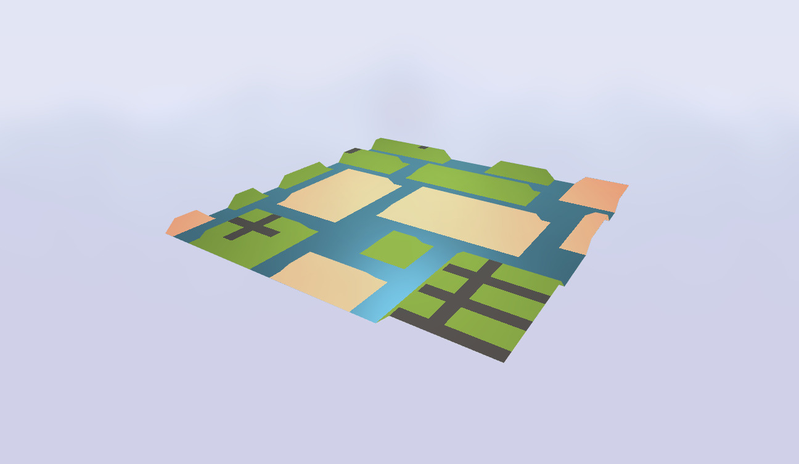

Antoine Roger
Baptiste Copros
Benoit Morawiec
You can test the project by launching the "terrain_generation_engine/index.html" file with a local webserver
(as for the PGL1_noise homework)
Implementation of the WaveFunctionCollapse (WFC) algorithm to generate a terrain with 3-4 tiles using the PG1 homework structure.

Minimap to visualize the terrain in 2D.
- shows up on pressing the "m" key
in the next steps of the project, it will enable the user to interact with the terrain and modify tiles
Week 3: Implement probas for the different tiles + starting some extension
Week 4: Extension and video